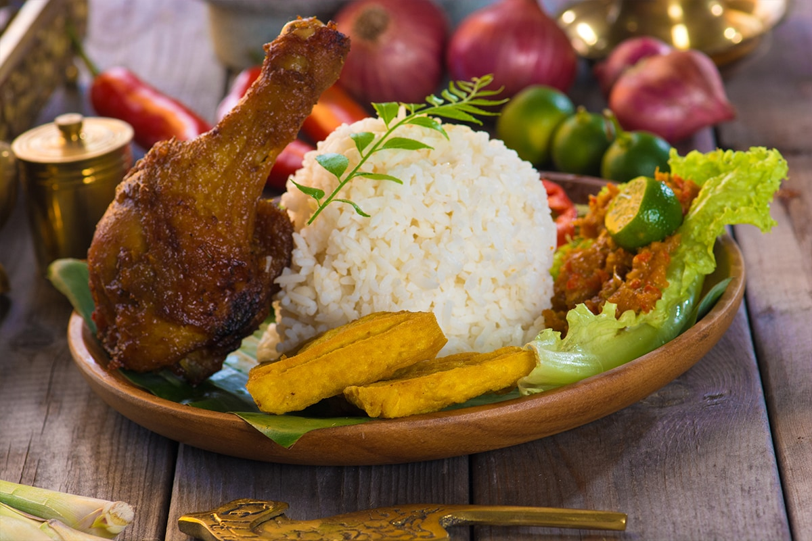

Nasi Uduk
Berasal dari Jakarta, Nasi Uduk adalah nasi kukus ala Betawi Indonesia yang dimasak dengan santan dan banyak ditemukan di seluruh negeri. Rasanya gurih dan serbaguna sehingga bisa ditemani dengan lauk apa pun.
Bahan-bahan yang perlu Anda siapkan adalah:
- 300 gram beras, dicuci bersih
- 450 ml santan
- 2 lembar daun salam
- 2 siung
- 2 batang serai, memarkan
- sepotong kayu manis 2 cm
- ½ sendok teh merica
- Sedikit garam
Cara Membuat Nasi Uduk :
- 1. Rebus santan lalu masukkan daun salam, cengkeh, serai, kayu manis, merica, dan garam. Aduk dan didihkan.
- 2. Campur santan dan nasi. Kukus hingga nasi matang.
- 3. Sajikan Nasi Uduk dengan lauk apa pun yang Anda suka.